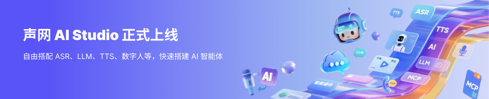

对话式 AI Studio V1.0 正式上线
新的控制台将智能体、通话任务和服务配置集中在同一个工作空间，让团队更快完成验证与发布。
声网官方

Agent 音频任务时长 - 本月
Agent 并发数 - 本月峰值
电话呼出/呼入量 - 本月
开启后，你可体验高拟真、自然流畅的实时语音对话，让 AI 真正“开口说话”。
新的控制台将智能体、通话任务和服务配置集中在同一个工作空间，让团队更快完成验证与发布。
支持更自然的打断、低延迟响应和跨渠道配置，帮助团队构建更连贯的对话体验。